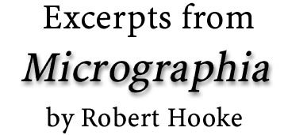
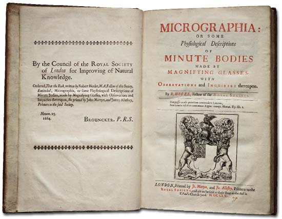

Title Page
To The King
The Preface
Of the curious texture of Sea-weeds
Of an Ant or Pismire
Of a Louse
Images and text used by permission of Octavo Corporation (www.octavo.com),
(c) 1999 Octavo Corporation. All rights reserved.
Octavo Corporation is a publisher of rare books and manuscripts with digital tools and formats through partnerships with libraries, museums, and individuals. Using high-resolution digital imaging technology, Octavo releases digital rare books on CD-ROM as Adobe PDF files which can be viewed on and printed from almost any computing platform. You can view each page and the binding on your computer screen, zoom in to view detail up to 800% in some cases, and search, copy and paste the "live" text placed invisibly behind the page images which is available for selected Editions. Also included in each edition is the work's collation and provenance, as well as commentary by a noted expert in its field.